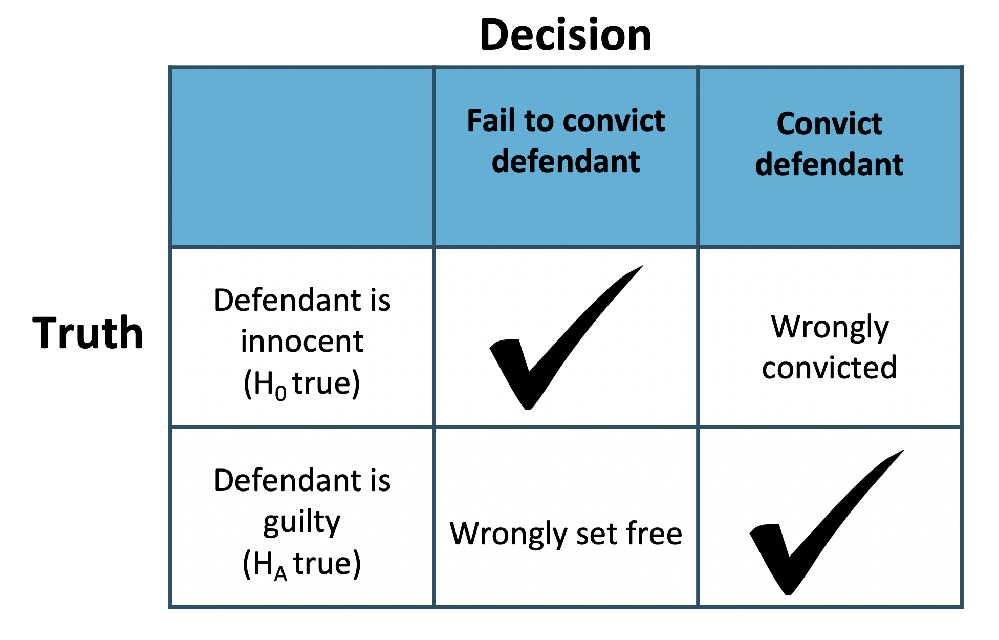

3.3 Hypothesis Testing for \(p\)
3.3.1 Objectives
By the end of this unit, students will be able to:
- Formulate claims about a population proportion in the form of a null hypothesis and alternative hypothesis.
- Identify the types of errors associated with statistical hypothesis testing.
- Conduct a large-sample z-test about population proportions.
3.3.2 Overview
Hypothesis Testing Steps
- Formulate the null hypothesis and the alternative hypothesis
- Use sample to compute p-value (or compute the test statistic and use the rejection region based on given significance level)
- Make decision for specified significance level
Formulation of Hypothesis
The null hypothesis: \(H_0: p = p_0\)
The alternative hypothesis is one of the three:
- \(H_a: p > p_0\) (right-sided) (or right-tailed)
- \(H_a: p < p_0\) (left-sided) (or left-tailed)
- \(H_a: p \neq p_0\) (two-sided) (or two-tailed)
What is p-value
A p-value is the calculated probability of observing data at least as favorable to the alternative hypothesis, assuming that the null hypothesis is true (in this section, we use the observed \(\hat{p}\), and under assumption the sample proportion \(\sim N(p_0, \sqrt{\frac{p_0(1-p_0)}{n}})\))
How to compute p-value
Use a sample of sample size \(n\) with sample proportion \(\hat{p}=p_1\), under the assumption that:
\(\hat{p}\) \(\sim N(p_0, \sqrt{\frac{p_0(1-p_0)}{n}})\)).
Let \(z_1 = \frac{p_1 - p_0}{\sqrt{\frac{p_0(1-p_0)}{n}}}\) (this is called the \(z\)-test statistic)
- For left-sided test, p-value is \(P(\hat{p} < p_1)\), or \(P(Z < z_1)\),
use pnorm \(({p_1, p_0,}{\sqrt{\frac{p_0(1-p_0)}{n}}})\) or pnorm \((z_1)\)
- For right-sided test, p-value is \(P(\hat{p} > p_1)\), or \(P(Z > z_1)\), use pnorm\(({p_1,p_0,}{\sqrt{\frac{p_0(1-p_0)}{n}}}, lower.tail = FALSE)\) or
pnorm \((z_1, lower.tail = FALSE)\)
- For two-sided test, p-value is \(P(|Z| > |z_1|)\), use 2*pnorm \((-|z_1|)\) or
2*pnorm \((|z_1|, lower.tail = FALSE)\)
Make decision by comparing p-value with significance level \(\alpha\)
If p-value \(\leq \alpha\), then we have enough evidence to reject \(H_0\) and substantiate \(H_a\);
If p-value \(> \alpha\), then we do not have enough evidence to reject \(H_0\)
The default value of significance level is \(\alpha = 0.05\)
Decision errors
Hypothesis tests are not flawless: we can make an incorrect decision in a statistical hypothesis test based on the data. For example, in the court system innocent people are sometimes wrongly convicted and the guilty sometimes walk free. One key distinction with statistical hypothesis tests is that we have the tools necessary to probabilistically quantify how often we make errors in our conclusions.
Recall that there are two competing hypotheses: the null and the alternative. In a hypothesis test, we make a statement about which one might be true, but we might choose incorrectly. There are four possible scenarios, which are summarized in the picture below.

Type 1 Error is rejecting the null hypothesis when \(H_0\) is actually true.
Type 2 Error is failing to reject the null hypothesis when the alternative is actually true.
In a US court, the defendant is either innocent (\(H_0\)) or guilty (\(H_A\)). What does a Type 1 Error represent in this context? What does a Type 2 Error represent?

The logic of hypothesis testing shares many key elements with the US judicial system. The jury does not know whether the defendant committed the crime, but they must decide whether or not to convict the individual. The jury is presented with evidence, akin to data, and asked whether the evidence is consistent with innocence. If the evidence is outside of what would be expected, the defendant is charged with a crime.
One-sided hypothesis tests
So far we have only considered what are called two-sided hypothesis tests, where we care about detecting whether \(p\) is either above or below some null value \(p_0\) i.e. \(H_A: p \ne p_0\). There is a second type of hypothesis test called a one-sided hypothesis test. For a one sided hypothesis test, the hypotheses take one of the following forms:
There’s only value in detecting if the population parameter is less than some value \(p_0\). In this case, the alternative hypothesis is written as \(p < p_0\) i.e. \(H_A: p < p_0\) for some null value \(p_0\).
There’s only value in detecting if the population parameter is more than some value \(p_0\). In this case, the alternative hypothesis is written as \(p > p_0\) i.e. \(H_A: p > p_0\) for some null value \(p_0\).
While we adjust the form of the alternative hypothesis, we continue to write the null hypothesis using an equals-sign i.e. \(H_0: p = p_0\) in the one-sided hypothesis test case.
In the entire hypothesis testing procedure, there is only one difference in evaluating a one-sided hypothesis test vs a two-sided hypothesis test: how to compute the p-value. In a one-sided hypothesis test, we compute the p-value as the tail area in the direction of the alternative hypothesis only, meaning it is represented by a single tail area.
Herein lies the reason why one-sided tests are sometimes interesting: if we don’t have to double the tail area to get the p-value, then the p-value is smaller and the level of evidence required to identify an interesting finding in the direction of the alternative hypothesis goes down.
However, one-sided tests aren’t all sunshine and rainbows: the heavy price paid is that any interesting findings in the opposite direction much be disregarded.
Why can’t we simply run a one-sided test that goes in the direction of the data?
Answer:
We have been building a careful framework that controls for the Type 1 Error, which is the significance level \(\alpha\) in a hypothesis test. We will use the \(\alpha = 0.05\) below to keep things simple.
Imagine we could pick the one-sided test after we saw the data. What will go wrong?
If \(\hat p\) is smaller than the null value, then a one-sided test where \(p < p_0\) would mean that any observation in the lower 5% tail of the null distribution would lead to us rejecting \(H_0\).
If \(\hat p\) is larger than the null value, then a one-sided test where \(p > p_0\) would mean that any observation in the upper 5% tail of the null distribution would lead to us rejecting \(H_0\).
Now, if \(H_0\) were true, there is a 10% chance of being in one of the two tails, so our testing error is actually \(\alpha = 0.10\), not 0.05. That is, not being careful about when to use one-sided tests effectively undermines the methods we are working so hard to develop and utilize.
3.3.3 Solved Problem
Before we start, the following question comes from a book written by Hans Rosling, Anna Rosling Ronnlund, and Ola Rosling called Factfulness:
How many of the world’s 1 year old children today have been vaccinated against some disease:
- 20%
- 50%
- 80%
In this tutorial, we will be exploring how people with a 4-year college degree perform on this and other world health questions as we learn about hypothesis tests, which are a framework used to rigorously evaluate competing ideas and claims
Hypothesis testing framework
We’re interested in understanding how much people know about world health and development. If we take a multiple choice world health question, then we might like to understand if \(\mathbf{H_0:}\) People never learn these particular topics and their responses are simply equivalent to random guesses.
\(\mathbf{H_A:}\) People have knowledge that helps them do better than random guessing, or perhaps, they have false knowledge that leads them to actually do worse than random guessing.
These competing ideas are called hypotheses. We call \(H_0\) the null hupothesis and \(H_A\) the alternative hypothesis. When there is a subscript 0 like in \(H_0\), data scientists pronounce it as “nought” (e.g. \(H_0\) is pronounced “H-nought”).
Null and Alternative Hypothesis
The null hypothesis (\(H_0\)) often represents a skeptical perspective or a claim to be tested.
The alternative hypothesis (\(H_A\)) represents an alternative claim under consideration and is often represented by a range of possible parameter values.
The null hypothesis often represents a skeptical position or a perspective of “no difference”. In our first example, we’ll consider whether the typical person does any different than random guessing on Rosling’s question about infant vaccinations.
The alternative hypothesis generally represents a new or stronger perspective. In the case of the question about infant vaccinations, it would certainly be interesting to learn whether people do better than random guessing, since that would mean that the typical person knows something about world health statistics. It would also be very interesting if we learned that people do worse than random guessing, which would suggest people believe incorrect information about world health.
The hypothesis testing framework is a very general tool, and we often use it without a second thought. If a person makes a somewhat unbelievable claim, we are initially skeptical. However, if there is sufficient evidence that supports the claim, we set aside our skepticism and reject the null hypothesis in favor of the alternative. The hallmarks of hypothesis testing are also found in the US court system.
Jurors examine the evidence to see whether it convincingly shows a defendant is guilty. Even if the jurors leave unconvinced of guilt beyond a reasonable doubt, this does not mean they believe the defendant is innocent. This is also the case with hypothesis testing: even if we fail to reject the null hypothesis, we typically do not accept the null hypothesis as true. Failing to find strong evidence for the alternative hypothesis is not equivalent to accepting the null hypothesis.
When considering Roslings’ question about infant vaccination, the null hypothesis represents the notion that the people we will be considering - college-educated adults - are as accurate as random guessing. That is, the proportion \(p\) of respondent who pick the correct answer, that 80% of 1 year olds have been vaccinated against some disease, is about 33.3% (or 1-in-3 if wanting to be perfectly precise). The alternative hypothesis is that this proportion is something other than 33.3%.
While its helpful to write these hypotheses in words, it can be useful to wrtie them using mathematical notation:
\(H_0: p = 0.333\)
\(H_A: p \ne 0.333\)
In this hypothesis setup, we want to make a conclusion about the population parameter \(p\). The value we are comparing the parameter to is called the null value, which in this case is 0.333. It’s common to label the null value with the same symbol as the parameter but with a subscript “0”. That is, in this case, the null value is \(p_0 = 0.333\) (pronounces “p-nought equals 0.333”)
3.3.4 Exercises
Exercise 1
Formulate the null and alternative hypotheses in the following situations:
(a) A company claims that the proportion of its customers that have complaints against the company is now less than 0.13.
(b) An inspector wants to establish that 2×4 lumber at a mill does not meet a specification that requires at most 5% break under a standard load.
(c) A university official believes that the proportion of students who currently hold part-time jobs has changed from the value 0.26 that prevailed four years ago.
Exercise 2
A census recorded five years ago that 20% of the families in a large community lived below the poverty level. To determine if this percentage has changed, a random sample of 400 families is studied and 70 are found to be living below the poverty level. Does this finding indicate that the current percentage of families earning income below the poverty level has changed from what it was five years ago? (Use significance level \(\alpha=0.05\))
Follow the steps to conduct the hypotheses testing:
(a) Formulate the hypotheses
(b) Compute the sample proportion
(c) Compute the test statistic
(d) Compute the p-value
(e) Draw conclusion using the significance level \(\alpha=0.05\).
Exercise 3
Conduct hypotheses testing.
Follow the example (Please redo the example by yourself)